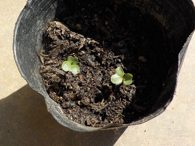
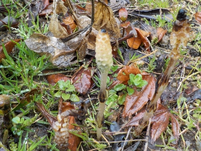

花と野菜の土にタネを蒔いています。
2025/03/23

種蒔きは種蒔き専用の土や赤玉土、鹿沼土を使っていましたが、ユーチューブで花と野菜の土を使っている人がいたので真似してやってみました。
土の隙間が多いので水やりでタネが下に落ちるんじゃないかと心配しましたが、今のところ問題なく発芽して育っています。
どちらかというと赤玉土の方が楽かな。
2025/03/23

種蒔きは種蒔き専用の土や赤玉土、鹿沼土を使っていましたが、ユーチューブで花と野菜の土を使っている人がいたので真似してやってみました。
土の隙間が多いので水やりでタネが下に落ちるんじゃないかと心配しましたが、今のところ問題なく発芽して育っています。
どちらかというと赤玉土の方が楽かな。
2025/03/16

庭の草抜きをあまりしていなかったので、ツクシがあちこちで出ています。
今年は草抜きをまめにやってキレイな庭にしたいなー。でも無理なんだろうな。
過去の日記
畑仕事じゃないよ。